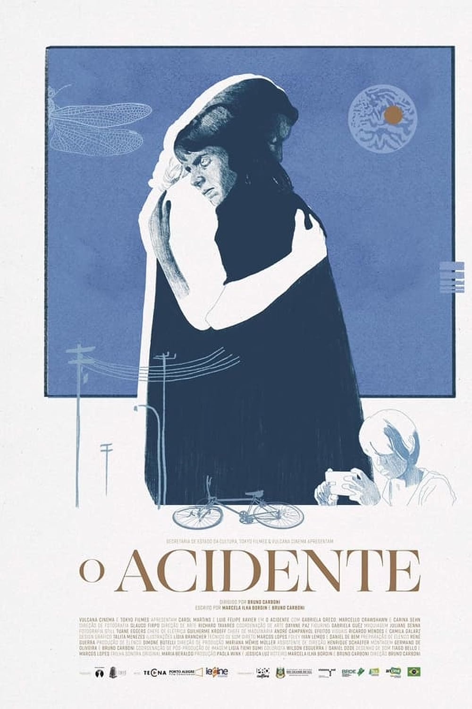
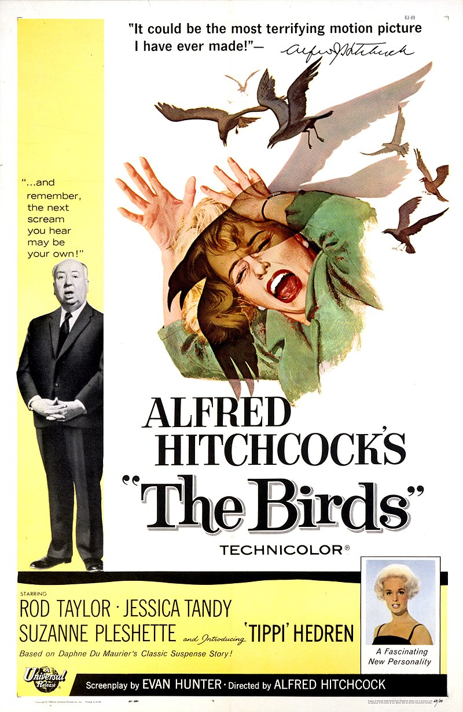
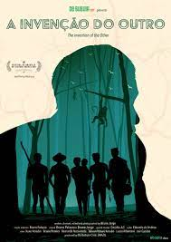

Cinemateca Capitólio visitar
- 
O Acidente
Brasil, 2022, 95 minutos, DCP Sessão comentada com a participação do diretor e do professor, músico e ensaísta Ricardo Timm de Souza no dia 09/09.
Horários: 15:00h Sala de Cinema
Direção: Bruno Carboni
Classificação Indicativa: 14 anos
Joana é uma ciclista que sofre um estranho acidente. Mesmo que tenha saído ilesa, ela decide esconder o episódio da mulher com quem está prestes a começar uma família. Mas, um vídeo do acidente viraliza e muda as coisas.
Mais informações - 
Os Pássaros
EUA, 1963, 118 minutos, DCP
Horários: 17:00h Sala de Cinema
Direção: Alfred Hitchcock
Melanie Daniels, uma bela e rica socialite, conhece o advogado Mitch Brenner em um pet shop e fica interessada nele. Após o encontro, ela decide procurá-lo na cidade de Bodega Bay, Califórnia, onde Mitch costuma passar os finais de semana. Melaine não sabe que vivenciará algo assustador: milhares de pássaros se instalaram na localidade e […]
Mais informações - 
A Invenção do Outro
Brasil, 2022, 144 minutos, DCP
Horários: 19:00h Sala de Cinema
Direção: Bruno Jorge
Classificação Indicativa: 16 anos
A Funai realiza a maior expedição das últimas décadas na Amazônia para tentar encontrar e estabelecer o primeiro contato com um grupo de indígenas isolados da etnia dos Korubos, em estado de vulnerabilidade, e ainda promover um delicado reencontro com parte da família já contactada poucos anos antes.
Mais informações